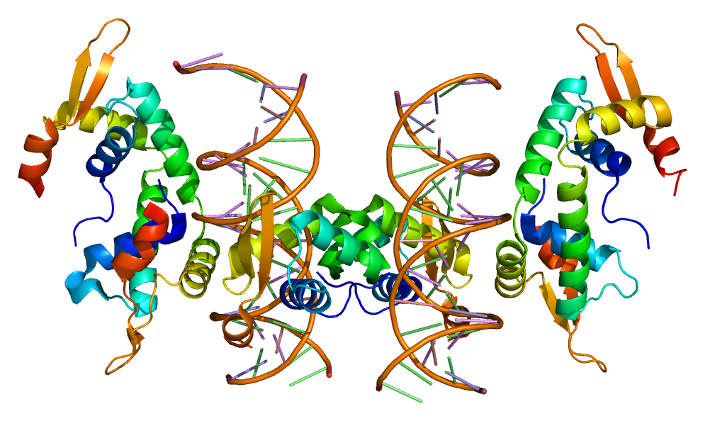

In a nutshell, linguistics is the scientific study of language.
Linguists are not only polyglots, grammarians, and word lovers. They are researchers dedicated to the systematic study of language who apply the scientific method by making observations, testing hypotheses, and developing theories. The science of language encompasses more than sounds, grammar, and meaning.
When you study linguistics, you are at the crossroads of every discipline.
When you study linguistics, you gain insight into one of the most fundamental parts of being human- the ability to communicate through language.
Forkhead box protein P2 (FOXP2) is a protein that, in humans, is required for proper development of speech and language.
Below you can see a picture of it! Neat, huh?
